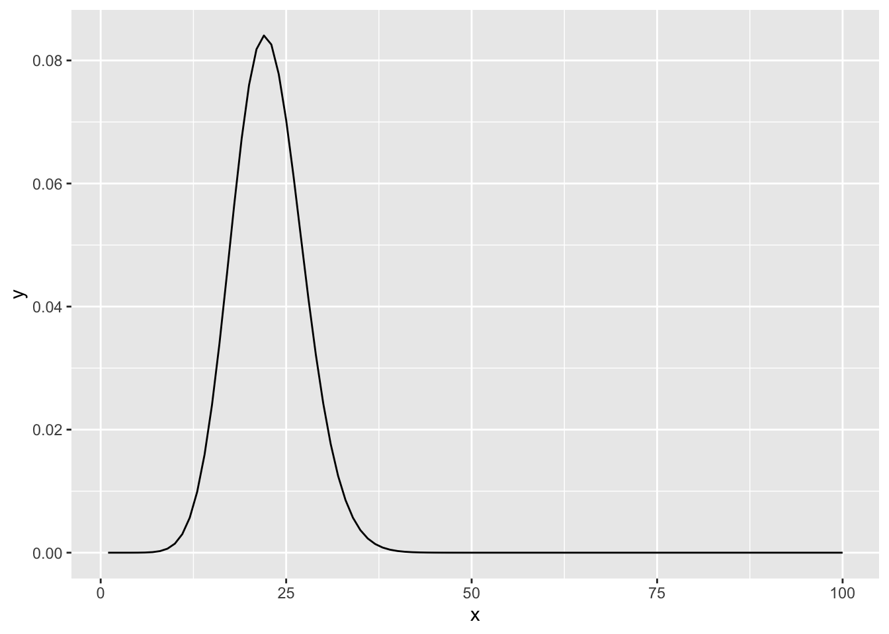
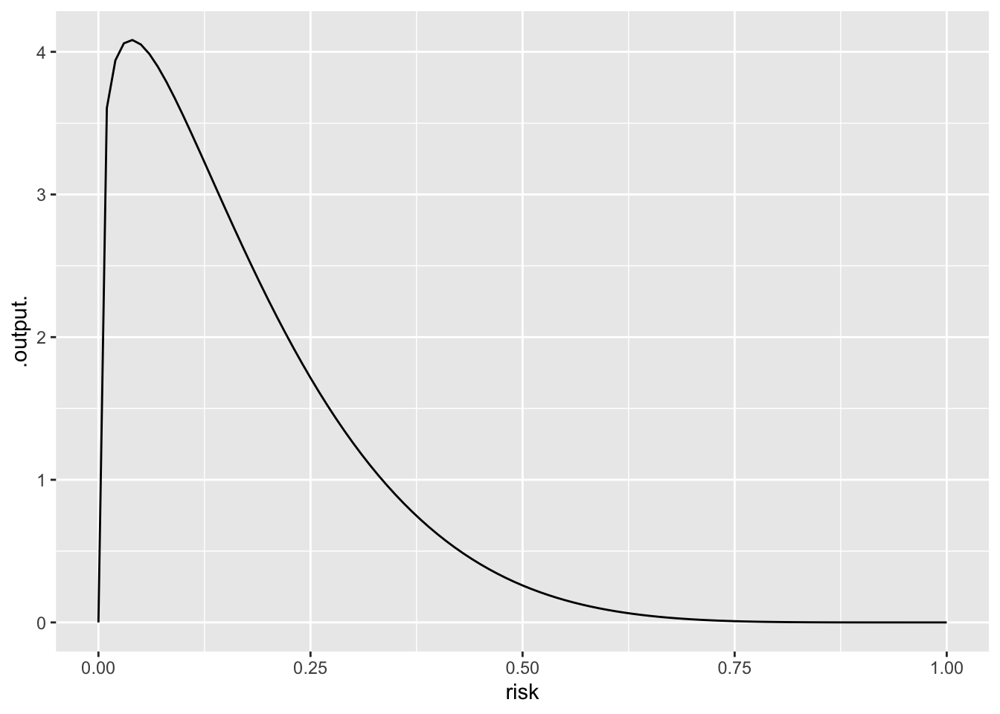
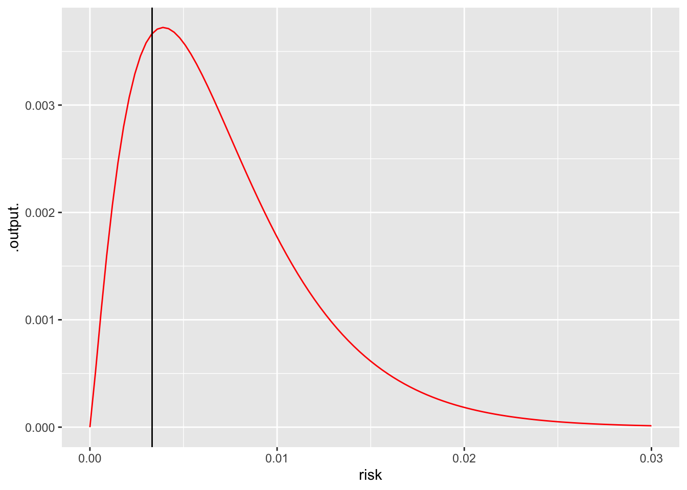

lm(height ~ nkids, data=Galton) |> conf_interval()# A tibble: 2 × 4
term .lwr .coef .upr
<chr> <dbl> <dbl> <dbl>
1 (Intercept) 67.2 67.8 68.4
2 nkids -0.256 -0.169 -0.0826Jane Doe
We have been constructing and using confidence intervals since Lesson 23. Recall that each coefficient of a model has its own confidence interval.
On many occasions, we have been interested in whether a connection is detectable between the response and a particular explanatory variable (perhaps conditioned on some covariate(s)). In such a situation, the confidence interval on that explanatory variable provides a quick answer: Does the confidence interval include zero? For instance, can we detect in the Galton data an effect of the number of children in a household (nkids) on the adult height of a child? (Speculation on why this might be: Perhaps less food per child is available in large households.) The simplest model is
# A tibble: 2 × 4
term .lwr .coef .upr
<chr> <dbl> <dbl> <dbl>
1 (Intercept) 67.2 67.8 68.4
2 nkids -0.256 -0.169 -0.0826The confidence interval on nkids does not include zero, so we can fairly say to have detected a connection between nkids and height. (The effect size is about one-sixth of an inch height loss per additional child in the household.)
TASK 1. Might the link between nkids and height be via sex? Is sex related to nkids
Waiting for profiling to be done...# A tibble: 2 × 5
term .lwr .coef .upr p.value
<chr> <dbl> <dbl> <dbl> <dbl>
1 (Intercept) -0.693 -0.362 -0.0344 0.0309
2 nkids -0.00156 0.0473 0.0967 0.0586# A tibble: 5 × 5
term estimate std.error statistic p.value
<chr> <dbl> <dbl> <dbl> <dbl>
1 (Intercept) 16.2 2.79 5.79 9.52e- 9
2 nkids -0.0438 0.0272 -1.61 1.07e- 1
3 sexM 5.21 0.144 36.1 7.58e-177
4 mother 0.321 0.0313 10.3 1.85e- 23
5 father 0.398 0.0296 13.5 8.61e- 38Focus on cases where CONFIDENCE INTERVAL JUST BARELY TOUCHES ZERO, p-value is about 0.05
How safe was the Challenger? Make this an exercise in 36 as well.
Two hypotheses for the Challenger lift-off:
Analyze the O-ring data under each of the hypotheses:
mod1 <- glm(incidents ~ 1, data=Orings, family=poisson)
# link function is the logarithm
Vals1 <- model_eval(mod1, skeleton=TRUE, interval="none")
# the value for lambda, according to the model, is 0.417
Orings$lambda_mod1 <- 0.417
L1 <- exp(sum(with(Orings, dpois(incidents, lambda_mod1, log=TRUE))))
mod2 <- glm(incidents ~ 1 + temp, data=Orings, family=poisson)
Vals <- model_eval(mod2, interval="none", temp=Orings$temp)
# Sensitivity test
mod2a <- glm(incidents ~ 1 + temp, data = Orings |> mutate(incidents = ifelse(incidents==3, 2, incidents)), family=poisson)
mod2b <- glm(incidents ~ 1 + temp, data = Orings |> mutate(incidents = ifelse(incidents==3, 4, incidents)), family=poisson)
Orings$lambda_mod2 <- Vals$.output
L2 <- exp(sum(with(Orings, dpois(incidents, lambda_mod2, log=TRUE))))
# At 30 deg F, what's the rate of O-ring failure
model_eval(mod2, interval="none", temp=30 ) temp .output
1 30 22.65492
If prior is that there’s a 10% chance (odds=1/9) that temperature is a problem, log posterior is likelihood ratio times log prior.
Risk of an accident
Prior: Mostly near zero, but let’s spread 10% of the prior from zero to one.
Likelihood: (1-risk) if there is no accident. (risk) if there is an accident.
prior <- makeFun(dbeta(risk, 1.2, 6 ) ~ risk)
# n is number of accident-free flights, p is number of accidents
posterior <- makeFun((1-risk)^n * risk^p * prior(risk) ~ risk + n + p)
slice_plot(prior(risk) ~ risk, bounds(risk=0:1)) 
slice_plot(posterior(risk, n=300, p=1) ~ risk, bounds(risk=0:.03), color="red") |> gf_vline(xintercept=1/301)Warning: `geom_vline()`: Ignoring `mapping` because `xintercept` was provided.
Now we will move to a form of statistical inference that is highly controversial: called variously “significance testing,” “null hypothesis testing,” “null hypothesis significance testing,” or even simply “hypothesis testing.” (I’ll call it NHT, short for “null hypothesis testing.”) Part of the controversy stems from basic misunderstandings that lead people often to overestimate the importance of their research findings. Another part of the controversy comes from the fact that the assumptions that shape the mathematical justification for the method are not always met in practice. There are many ways to game the analysis to increase the chances of an impressive-looking result that are standard research practices.
We will spend the next three classes on NHT, almost a sixth of our class time for the part of Math 300 where we have been using the Lessons book. In many introductory statistics classes and textbooks, about a quarter of the entire course is devoted to what they call “hypothesis testing,” mostly in the form of variety of statistical “tests” applicable to different common situations.
The language of NHT, especially the terms “null hypothesis” and “p-value,” is so widely used in reporting statistical results that you must know the basics. But, I have to be careful, since I don’t want to imply that NHT deserves to be so widely used. Indeed, in almost all the situations covered by introductory statistics courses confidence intervals provide an alternative to NHT that tells you everything worthwhile about the NHT result but is less subject to mis-use.
My job is:
A little bit of history can help you see how the unhappy situation surrounding NHT and what the textbooks call “hypothesis testing” came about.